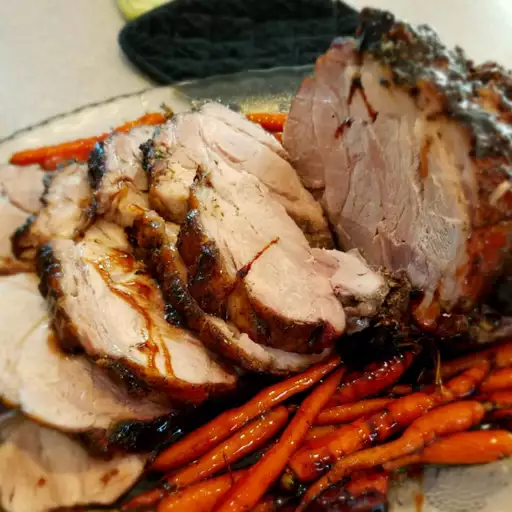

< Go back
Herb-Roasted Pork

Description :
This herb-roasted pork loin recipe has a sweet and tangy glaze.
Ingredients :
- 1 teaspoon rubbed sage
- 1 clove garlic, minced
- ½ teaspoon salt
- ¼ teaspoon ground black pepper
- 1 (5 pound) boneless pork loin
- ½ cup white sugar
- ¼ cup vinegar
- ¼ cup water
- 2 tablespoons soy sauce
- 1 tablespoon cornstarch
Directions :
- Preheat the oven to 325 degrees F (165 degrees C).
-
Combine sage, garlic, salt, and black pepper in a small bowl; rub
thoroughly all over pork loin. Place pork in a roasting pan.
-
Bake in the preheated oven on the center rack, uncovered, until an
instant-read thermometer inserted into center reads at least 145 degrees
F (63 degrees C), depending upon your desired doneness, about 3 hours.
-
Meanwhile, combine sugar, vinegar, water, soy sauce, and cornstarch in a
small saucepan over medium heat; cook, stirring occasionally, until
glaze begins to bubble and thicken slightly. Remove from heat; cover to
keep warm.
-
Brush pork loin with glaze 3 or 4 times during the last 30 minutes of
cooking. Pour remaining glaze over roast to serve.